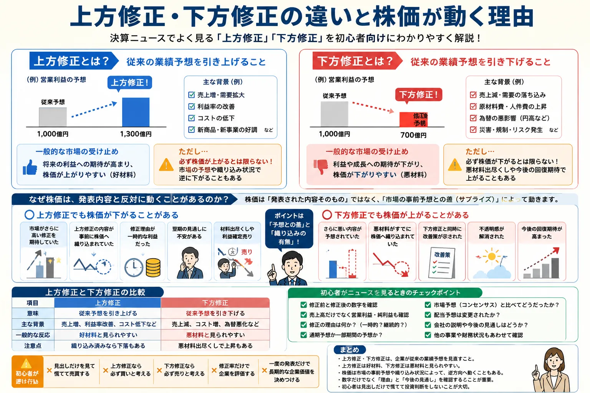

Overview
決算ニュースを見る前に知っておきたい基礎

- 企業は決算発表などで、今後の売上高や利益の見通しを公表することがあります。
- その見通しを途中で引き上げるのが上方修正、引き下げるのが下方修正です。
- 修正された数字は将来予想であり、確定した実績ではありません。
- 株価は発表内容そのものより、市場の事前予想との差で大きく動く場合があります。
Definition
上方修正・下方修正とは？
上方修正と下方修正は、企業が以前に公表した業績予想を見直すことです。企業を取り巻く環境や実際の進捗が当初の想定から変化したときに、新しい予想を公表します。
上方修正
従来の業績予想を引き上げること
売上高や利益が当初の想定を上回る見込みになった場合などに、企業が予想数値を高い水準へ変更します。一般には好材料と見られやすい発表です。
下方修正
従来の業績予想を引き下げること
売上高や利益が当初の想定を下回る見込みになった場合などに、企業が予想数値を低い水準へ変更します。一般には悪材料と見られやすい発表です。
修正対象は売上高だけではありません。営業利益、経常利益、親会社株主に帰属する当期純利益、1株当たり利益、配当予想などが変更される場合があります。どの項目が修正されたのかを分けて確認することが大切です。
Earnings Forecast
そもそも業績予想とは？
業績予想とは、企業が今後の一定期間について、売上高や利益がどの程度になるかを見積もって公表するものです。企業によって公表方法や対象項目は異なります。
将来の見通し
業績予想は、今後の売上や利益に関する会社の見通しです。すでに確定した数字ではありません。
本決算・四半期決算との違い
決算実績は過去の一定期間に実際に得た売上や利益です。業績予想は、その先の期間を見通した数字です。
前提条件で変化する
販売数量、原材料価格、為替レート、景気などの前提が変われば、予想も見直される可能性があります。
決算の基本から確認したい方は、決算発表とは？なぜ株価が大きく動くの？もあわせて確認すると、実績と業績予想の違いを整理しやすくなります。
Reasons
企業が業績予想を修正する理由
企業が予想を修正する背景は一つではありません。売上の変化だけでなく、コスト、為替、事業環境、一時的な損益など、複数の要因が影響します。理由の重要度は企業や業種によって異なります。
売上の変化
販売数量や需要が想定と違った
商品やサービスの販売が予想を上回れば上方修正、下回れば下方修正の要因になります。
コストの変化
原材料費や人件費が増減した
売上が伸びてもコストが大きく増えれば利益が減ることがあります。反対にコスト削減で利益が増える場合もあります。
為替の影響
円安・円高で収益が変化した
輸出入や海外事業の比率によって、為替変動が売上高・原価・利益へ与える影響は異なります。
事業環境
新商品や市場環境が変わった
新商品の販売、競争環境、受注状況、設備稼働率などの変化が予想修正につながります。
一時的な損益
資産売却や減損が発生した
保有資産の売却益、補助金、減損損失、訴訟費用など、通常の事業活動とは別の要因で純利益が動く場合があります。
外部リスク
災害・規制・地政学リスク
自然災害、制度変更、輸出規制、国際情勢、物流停滞などが生産や販売へ影響する場合があります。
同じ円安でも、輸出企業には追い風、輸入コストの大きい企業には逆風となる場合があります。業績修正の理由を読むときは、セクター投資とは？業種ごとの特徴や円安とは？も参考になります。
Upward Revision
上方修正で株価が上がりやすい理由
上方修正は、企業が従来より良い業績を見込んでいることを示します。そのため一般には、将来の利益や企業価値への期待が高まりやすくなります。
-
将来の利益への期待が高まる
利益が従来予想より増える見込みになれば、企業が生み出す将来の利益も大きくなると考えられやすくなります。
-
事業の進捗が良いと判断される
売上増加や利益率改善による上方修正であれば、本業が想定より順調に進んでいると評価される場合があります。
-
株主還元への期待につながる場合がある
利益の増加によって、配当増額や自社株買いなどへの期待が高まることがあります。ただし実施されるとは限りません。
重要：上方修正は好材料と見られやすいものの、発表すれば必ず株価が上がるわけではありません。株価の基本的な動きは、株価はなぜ上下するのか？でも確認できます。
Why Prices Fall
上方修正でも株価が下がるのはなぜ？
「良い発表なのに株価が下がった」という場面では、発表内容が悪かったとは限りません。市場がどの程度の上方修正を期待していたか、好材料がすでに株価へ反映されていたかが重要です。
期待未達
市場はさらに高い修正を期待していた
会社予想は上方修正でも、投資家や市場関係者の予想より低ければ、期待外れと判断される場合があります。
織り込み済み
好材料が事前に株価へ反映されていた
発表前から業績改善への期待で株価が上昇していると、正式発表後に新たな買い材料が少なくなる場合があります。
一時的要因
本業ではなく一時的な利益だった
資産売却益などで純利益だけが増えている場合、継続的な成長ではないと受け止められることがあります。
先行き不安
翌期や次の四半期に不安がある
今期予想が上がっても、需要鈍化やコスト増などで次の期間の見通しが弱ければ、株価が下がる場合があります。
材料出尽くし
発表をきっかけに利益確定売りが出た
好材料の発表を売却のきっかけと考える投資家もいます。短期間で上昇していた銘柄ほど売りが増える場合があります。
市場全体
金利や相場環境が重しになった
個別企業の発表が良くても、市場全体の下落や金利上昇などが強ければ、株価が下がることがあります。
上方修正後の値動きだけを見て、発表内容の良し悪しを判断するのは注意が必要です。短期的な売買では利益確定（利確）とは？の考え方も株価へ影響します。
Downward Revision
下方修正で株価が下がりやすい理由
下方修正は、企業の売上や利益が従来予想より弱くなる見込みを示します。そのため一般には、成長期待や収益力への評価が低下しやすくなります。
利益や成長期待が低下する
将来得られる利益が従来より少ないと見込まれれば、企業価値の評価が引き下げられる場合があります。
配当や財務への不安
利益の減少が続くと、配当の維持や資金繰り、設備投資などへの不安が意識されることがあります。
事業環境の悪化が警戒される
需要減少やコスト増が一時的ではなく続くと判断されると、今後も業績が弱いのではないかと警戒されます。
Why Prices Rise
下方修正でも株価が上がることはある？
下方修正は悪材料と見られやすい発表ですが、株価が上がることもあります。中心となる考え方は、発表内容そのものではなく、市場の事前予想との差です。
さらに悪い内容が予想されていた
下方修正でも、市場が想定していたほど悪くなければ、「最悪の事態は避けられた」と受け止められる場合があります。
悪材料がすでに株価へ織り込まれていた
発表前から業績悪化への警戒で株価が下落していると、正式発表後に売りが一巡することがあります。
改善策が同時に示された
不採算事業の整理、コスト削減、価格改定、事業再編など、今後の改善策が具体的に示されると回復期待が高まる場合があります。
不透明感が解消された
どの程度悪いのか分からない状態より、影響額や原因が明確になった状態のほうが投資家は判断しやすくなります。
今後の回復期待が高まった
今期は下方修正でも、受注回復や在庫調整の進展などが示されれば、将来の改善を先回りして株価が上昇する場合があります。
株価は過去や現在の数字だけでなく、将来への期待も反映します。特に値動きの大きい分野では、半導体株とは？のように、世界景気や需要見通しを強く受けるテーマもあります。
Comparison
上方修正と下方修正の比較
基本的な違いを表で整理します。ただし、一般的な反応と実際の株価が必ず一致するわけではありません。
| 項目 | 上方修正 | 下方修正 |
|---|---|---|
| 意味 | 従来予想を引き上げる | 従来予想を引き下げる |
| 主な背景 | 売上増、利益率改善、コスト減など | 売上減、コスト増、需要悪化など |
| 一般的な反応 | 好材料と見られやすい | 悪材料と見られやすい |
| 注意点 | 織り込み済みなら下落もある | 悪材料出尽くしで上昇もある |
※ スマートフォンでは横にスクロールできます。
News Checklist
初心者が確認したいポイント
業績修正のニュースを見たときは、見出しだけで判断せず、次の項目を順番に確認すると内容を整理しやすくなります。
-
修正前と修正後の数字
どの項目が、いくらからいくらへ変更されたのかを確認します。修正率だけでなく金額も見ます。
-
売上高だけでなく利益
売上高が増えていても利益が減る場合があります。営業利益、経常利益、純利益を分けて確認します。
-
修正の理由
販売好調、値上げ、コスト削減、為替、資産売却、減損など、何が数字を動かしたのかを読みます。
-
通期予想か一部期間の予想か
年間全体の予想なのか、四半期や上期・下期など一部期間の見通しなのかを区別します。
-
一時的な要因か継続的な変化か
本業の成長による修正か、一度限りの利益・損失による修正かで意味が異なります。
-
市場予想と比べてどうだったか
会社予想だけでなく、投資家が事前に期待していた水準との差が株価反応に影響します。
-
配当予想も変更されたか
業績予想と同時に増配・減配・据え置きが発表される場合があります。
-
会社の説明と今後の見通し
今回の修正理由だけでなく、次の四半期や翌期へ続く要因なのかを確認します。
Common Mistakes
初心者が避けたい行動
業績修正は重要な情報ですが、一度の発表だけで投資判断を急ぐと、値動きに振り回される可能性があります。
- ニュースの見出しだけを見て慌てて売買する
- 上方修正なら必ず買いだと考える
- 下方修正なら必ず売りだと考える
- 修正率だけで企業全体を評価する
- 一度の発表だけで長期的な企業価値を決めつける
投資では、期待できるリターンだけでなく損失の可能性も考える必要があります。基本は投資のリスクとリターンの関係とは？で整理できます。
Related Articles
関連する話題・基礎知識
業績修正と株価の関係を理解するには、決算、株価変動、為替、金利、業種ごとの特徴も一緒に確認すると理解が深まります。
FAQ
上方修正・下方修正に関するよくある質問
-
上方修正とは何ですか？
上方修正とは、企業が以前に公表した売上高や利益などの業績予想を、従来より高い数字へ見直すことです。確定した実績ではなく、将来の見通しを変更する発表です。 -
下方修正とは何ですか？
下方修正とは、企業が以前に公表した売上高や利益などの業績予想を、従来より低い数字へ見直すことです。需要の減少、コスト増、為替変動、一時的な損失など、理由は企業ごとに異なります。 -
上方修正なら株価は必ず上がりますか？
必ず上がるわけではありません。市場がさらに大きな上方修正を期待していた場合や、好材料が発表前に株価へ織り込まれていた場合、一時的な利益による修正だった場合などは、発表後に株価が下がることもあります。 -
下方修正でも株価が上がるのはなぜですか？
市場がさらに悪い内容を予想していた場合や、悪材料がすでに株価へ織り込まれていた場合、不透明感の解消や改善策への期待から株価が上がることがあります。株価は発表内容と事前予想との差でも動きます。 -
業績修正はいつ発表されますか？
本決算や四半期決算と同時に公表される場合もあれば、従来予想との差が大きくなった段階で、決算発表とは別に公表される場合もあります。企業の適時開示情報を確認することが大切です。 -
初心者はどの数字を確認すればよいですか？
修正前後の売上高、営業利益、経常利益、純利益、1株当たり利益、配当予想などを確認します。数字だけでなく、修正理由、一時的か継続的か、今後の見通し、市場予想との差も確認することが大切です。
Summary
まとめ｜修正の方向だけでなく理由と市場予想を見る
- 上方修正・下方修正は、企業が従来の業績予想を見直すことです。
- 上方修正は好材料、下方修正は悪材料と見られやすい傾向があります。
- 株価は市場の事前予想や織り込み状況によって、発表内容と逆方向へ動くこともあります。
- 修正された数字だけでなく、修正理由と今後の見通しを確認することが重要です。
- 初心者は見出しだけで慌てて売買せず、実績・予想・市場期待を分けて考えることが大切です。
Next Step
決算発表と株価が動く基本も一緒に確認する
上方修正・下方修正を理解した後は、決算実績と業績予想の違い、株価が市場の期待で動く仕組みを確認すると、決算ニュースをより落ち着いて読めるようになります。
ご利用にあたっての注意事項
本記事は一般的な情報提供と金融教育を目的としており、特定の企業・銘柄・証券会社の推奨や、投資の勧誘を目的としたものではありません。株式などの金融商品は元本保証がなく、相場変動、業績変化、為替変動、金利変動、信用状況、制度変更などにより損失が生じる場合があります。業績予想は将来の見通しであり、実際の業績と異なる可能性があります。取引を行う際は、最新の公式情報、決算短信、適時開示資料、契約締結前交付書面などを確認し、ご自身の判断と責任で行ってください。